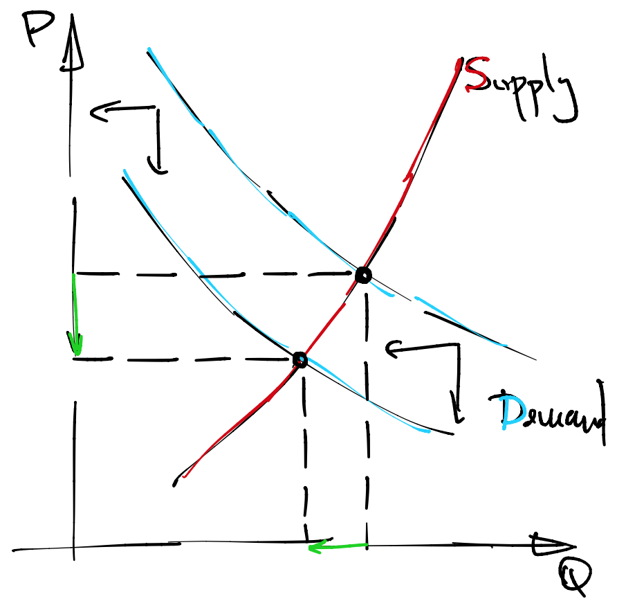
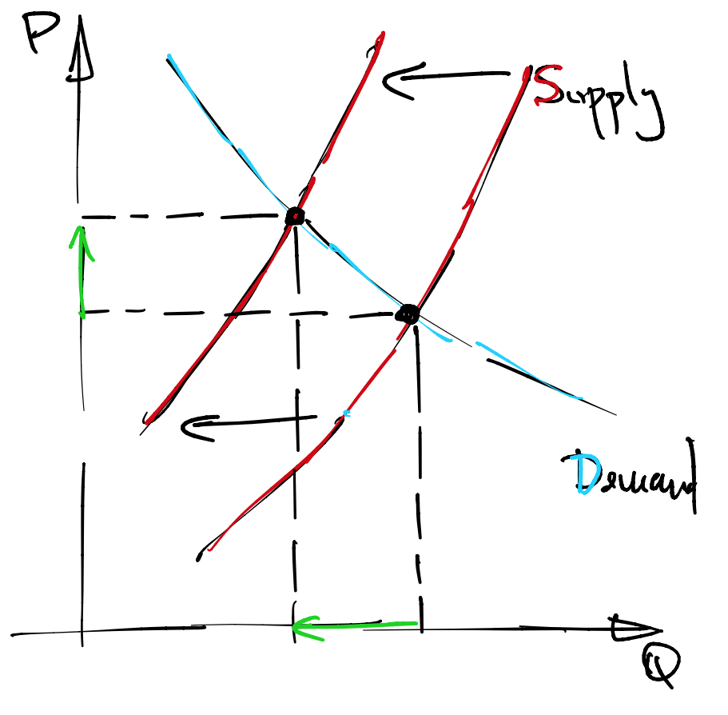
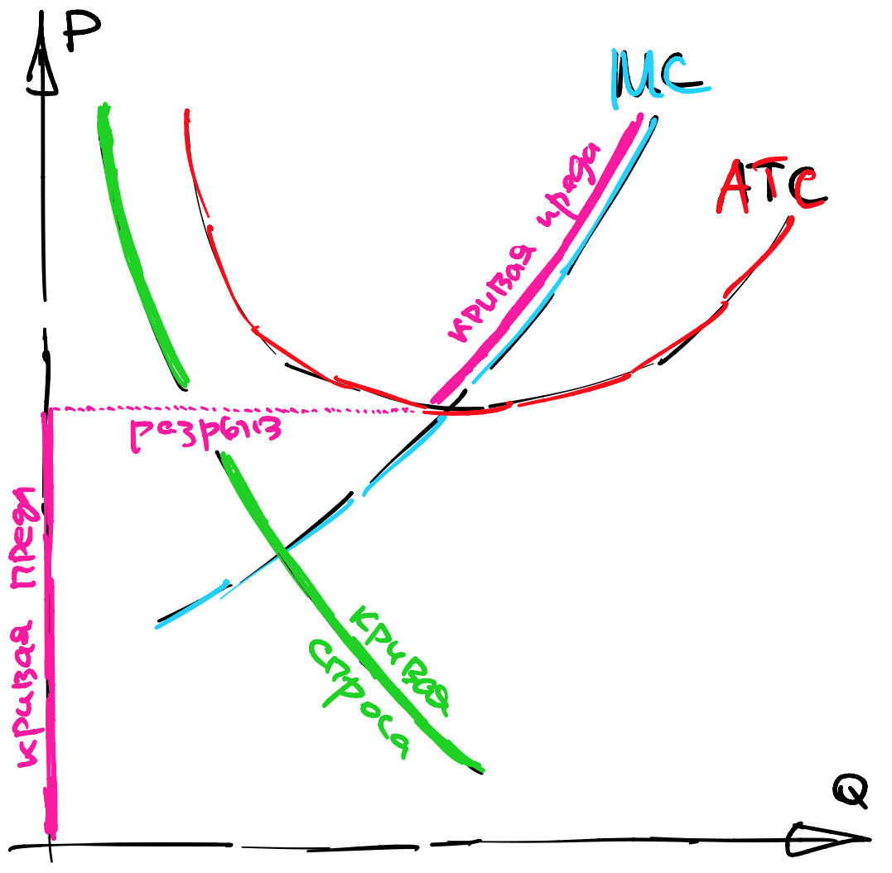

Шестая лекция, часть 2#
В этой секции мы поговорим о кривых спроса и предложения, которые получаются в результате решения задач потребителя и производителя. Потребитель создает кривые спроса на конечные товары, а производитель - на факторы. Вдобавок, производитель создает кривые предложения конечных товаров.
Важным моментом во всем последующем анализе является то, что мы фокусируемся на рынке одного единственного товара, на который есть спрос и предложение. Это называется частичным равновесием. Остальные товары, спросы и цены на них, выносятся за рамки анализа.
Пусть количество интересующего нас товара и равновесная цена на него обозначаются \(Q,P\) соответственно.
Сдвиги кривых спроса (на товары)#
Зафиксируем кривую предложения \(Q^s(P)\).
Появление субститутов#
Когда появляется новый субститут товара, то мы считаем, что спрос на на рассматриваемый товар падает (сокращается). На самом деле не просто спрос в равновесии, а вся кривая спроса \(Q^d(P)\) падает, в том смысле, что при одной и той же цене потребители согласны купить этот товар в меньшем количестве.
{kind=link}
И только в результате пересечения спроса с предложением мы можем утверждать о, собственно, падении (значения) спроса.
Формально замоделировать появление комплемента можно, например, при помощи функции полезности Кобба-Дугласа. Пусть для товара \(x\) появился близкий субститут \(\tilde x\), такой, что полезность агента изменилась следующим образом:
Проанализируйте, как изменится кривая спроса \(x(p)\) как функция от собственной цены.
Появление комплементов#
Когда появляется новый комплемент товара, то мы считаем, что спрос на рассматриваемый товар растет (расширяется). Представьте себе, что ученые открыли способ использовать старые покрышки вместо ядерного топлива. Это привело бы к увеличению спроса (даже на новые) покрышки и повышению цены.
Чуть сложнее смоделировать появление комплемента, но, при большом желании, можно:
Тот же вопрос, что и в случае появления субститута.
Изменение цен другие товары#
Когда цены других товаров меняются, направление сдвига кривой спроса на наш товар зависит от того, были ли они (валовыми) субститутами или комплементами.
Мы знаем, что Леонтьевская полезность дает комплементарную связь между товарами, а полезность Кобба-Дугласа что-то среднее между субститутом и комплементом, так как спрос при такой полезности не реагирует на изменения цен других товаров.
Товары в CES полезности, которая рассмотрена во 2 лекции, будут связаны как субституты. Действительно, вспомним формулы:
Изменение дохода и числа потребителей#
Довольно предсказуемо ведет себя кривая спроса при увеличении дохода - она будет расширяться. Конечно, если товар не нормальный, будет верно обратное, но мы уже знаем, что для этого нужны очень специфические условия.
При увеличении числа потребителей кривая спроса, конечно же, расширяется. Если потребителей стало больше, скажем, за счет открытия новых рынков сбыта товара, то количество запрошенного товара увеличится при каждом уровне цены.
Изменение собственной цены#
Ну и, конечно, тяжело обойти стороной самое главное - изменение собственной цены.
Как обычно ведет себя кривая спроса при увеличении собственной цены?
Никак, она уже зависит от собственной цены в каждой точке. Соответственно, изменение собственной цены представляется перемещением вдоль кривой, но не перемещением самой кривой спроса.
Сдвиги кривых спроса (на факторы)#
Ничто не мешает нам исследовать частичное равновесие на рынке факторов производства. В таком случае фирмы ведут себя как потребители. Поставщиками факторов могут являться другие фирмы или, например, если речь идет о нефти, угле или металле, цены факторов могут быть постоянными.
Вот список событий, которые могут спровоцировать сокращение спроса на факторы производства:
Общее улучшение технологии, скажем, за счёт равномерного роста производственной функции;
Увеличение цены на фактор, который находится в комплементарной связи (в смысле производства - подумайте, что это значит) с тем, который мы изучаем;
Уменьшение цены на фактор, который является субститутом (опять же, в смысле производства);
Уменьшение цены на конечный товар, использующий этот фактор в производстве;
Уменьшение числа фирм (внезапное).
Сдвиги кривых предложения#
Зафиксируем кривую спроса \(Q^d(P)\). Сдвиги кривых предложения чуть более хитрые, поскольку важны оси.
Сокращение кривой предложения - это уменьшение \(Q\) при той же цене \(P\).
Расширение кривой предложения - это увеличение \(Q\) при той же цене \(P\).
Поскольку цена, как правило, находится на вертикальной оси, то расширение - это движение вправо. Постарайтесь не запутаться.
Увеличение цен на факторы#
Довольно стандартной является ситуация, когда цены на факторы производства растут. Напомню, что функция издержек зависит от цен на факторы. Поскольку функция издержек - это огибающая издержек, её наклон по параметрам равен условному спросу на факторы производства, то есть у неё положительный наклон:
Но на самом деле этого еще не достаточно, чтобы заявить о монотонности оптимального уровня производства по ценам на факторы. Для этого надо вспомнить, что гессиан (вогнутой по \(p\)) функции издержек - это градиент от условного спроса:
Значит, сам условный спрос монотонно убывает по ценам. Ну а раз условный спрос убывает, то и количество произведенного товара, конечно же, тоже убывает.
{kind=link}
Санкции, квоты, катаклизмы#
Конечно же, когда вмешивается некоторый внешний фактор, физически запрещающий производить определенный товар, то предложение этого товара должно упасть. Примерами могут служить:
Запрет на оборот (вредного) товара
Пожары, цунами…
Войны, санкции…
Цена на сам товар#
Как ведет себя кривая предложения при увеличении цены на сам товар?
Никак.
Агрегирование#
Иногда мы будем моделировать несколько потребителей и несколько производителей. Тогда необходимо сложить их соответствующие кривые спроса и предложения “горизонтально”. Иными словами, необходимо сложить решения соответствующих задач потребителя/производителя при каждой возможной цене.
В следующих примерах я буду использовать обозначения \(p,q,r\) для цен товаров и факторов, a \(Q^s_{\sum}\) и \(Q^d_{\sum}\) для агрегированного предложения и спроса на товар \(x\).
Пример со спросом#
Предположим, что есть два потребителя с одинаковым доходом, но разной полезностью:
Нас будет интересовать агрегированный спрос, например, на товар \(x\), как функция от его цены \(p\):
где \(q\) - это цена товара \(y\), являющаяся параметром задачи.
Пример с предложением#
Предположим, что есть два производителя с технологиями
где \(z\) - это единый фактор производства с ценой \(r\). Выпишем лагранжианы:
Отсюда легко находятся множители Лагранжа, \(\lambda = \gamma = r\), и, собственно, предложения товара \(x\) от каждого из заводов. Суммарное предложение равно:
Частичное равновесие#
Note
Частичным равновесием на рынке товара \(x\) называется цена \(P^{\ast}\) и количество \(Q^{\ast}\), лежащие в пересечении агрегированных кривых спроса и предложения:
Как правило, частичное равновесие существует, поскольку кривые спроса монотонны и непрерывны по общим теоремам. Однако есть исключения. Например, при анализе предложения в присутствии фиксированных издержек. Фирма “разрывно” перемещает свое предложение в ноль в момент, когда цена проходит через точку закрытия рынка. Это значит, что равновесия может не быть, см. иллюстрацию:
{kind=link}
Так это что, получается, невыпуклая задача?
Да, потому что максимум в \(\max(0, \pi)\) - это выпуклое преобразование, а нам нужно хотя бы вогнутое.